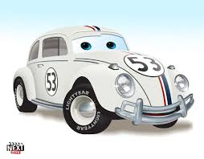
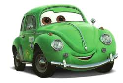

O Fusca no Brasil!
Quem criou o Fusca?
Acesse esse vídeo
Ferdinand Porsche O Carro do Povo (Volkswagen, o nome original do Fusca que também batizou a marca alemã) originalmente surgiu com esse pretexto. O país contava com uma sociedade pouco motorizada e com veículos acessíveis apenas à burguesia alemã. Por isso, Hitler encomendou o projeto ao projetista Ferdinand Porsche.